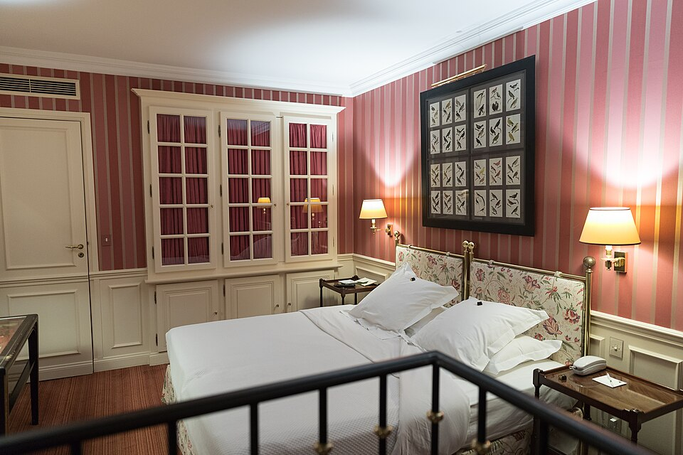
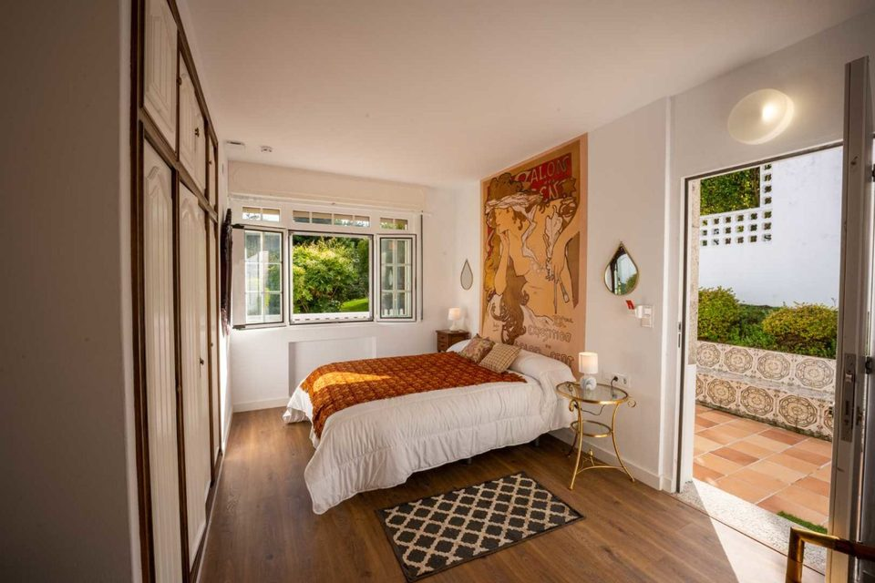
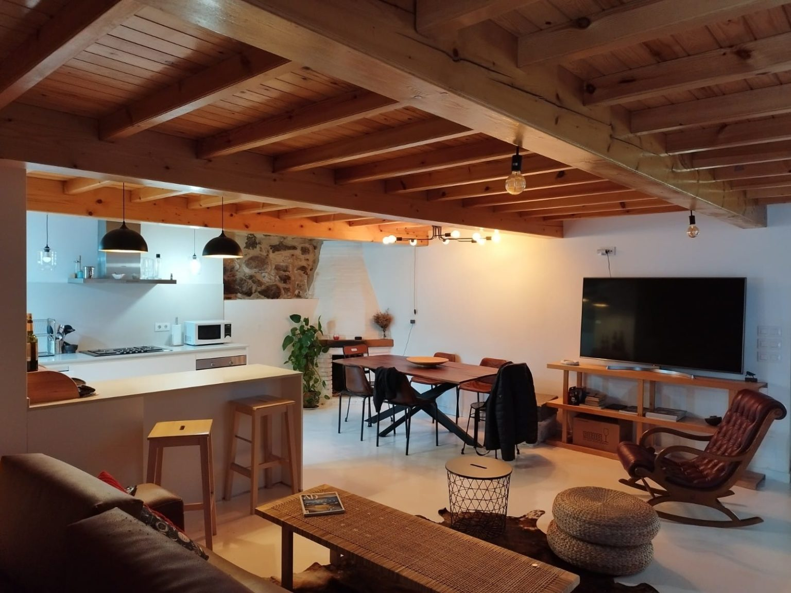
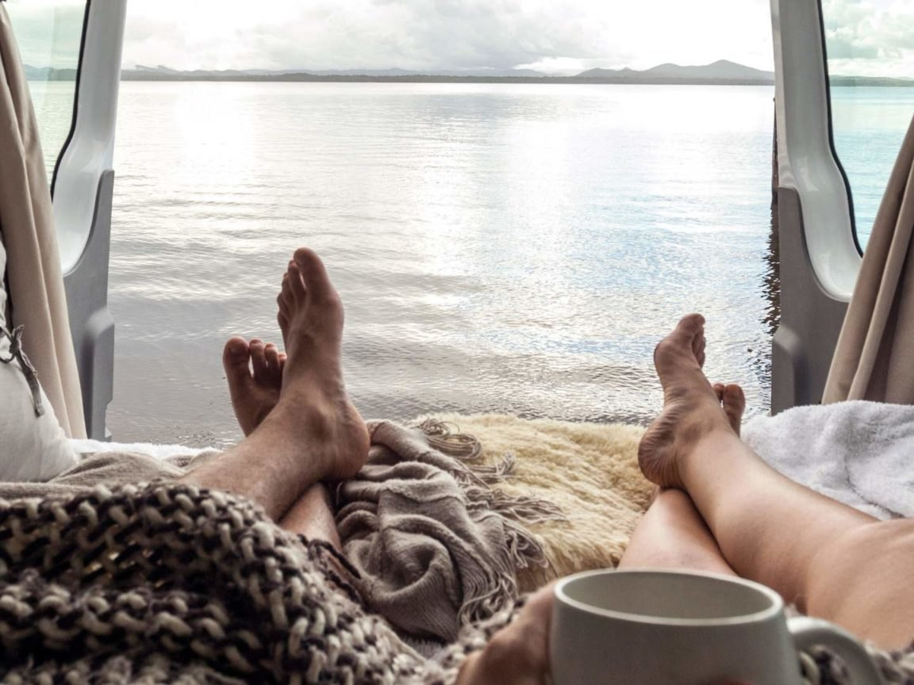
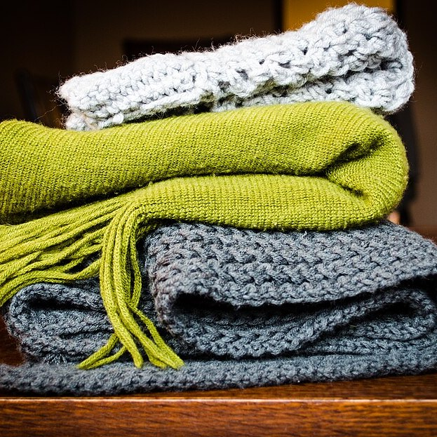
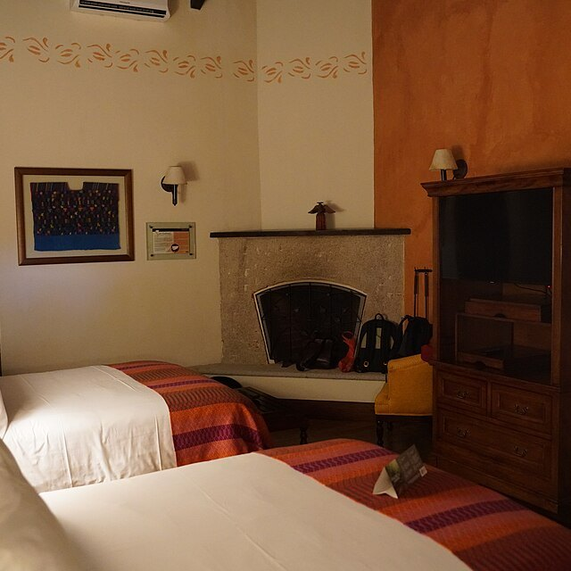
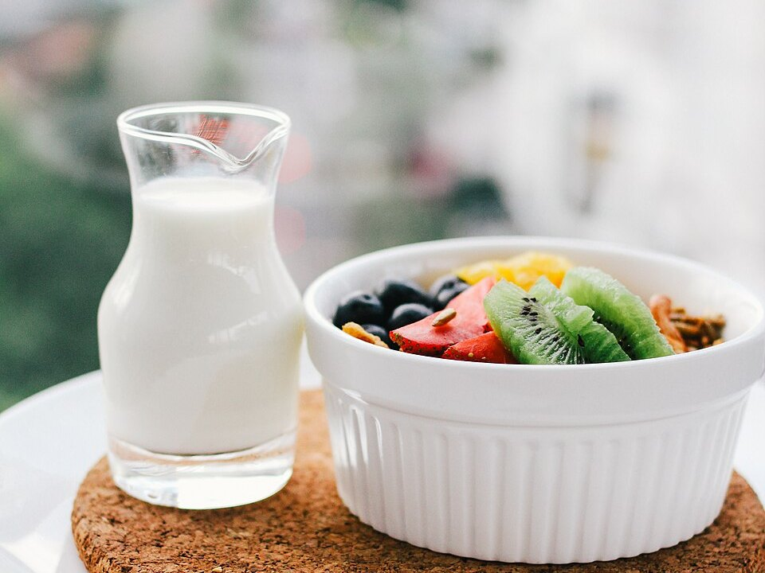

Hotel boutique
Siete habitaciones con vistas al mar.
Preguntar por una habitación

Lunes cerrado por descanso.
Hotel boutique de 7 habitaciones con vistas al mar y cocina de mercado en Ferrol.
Ferrol
La finca

Siete habitaciones con vistas al mar.
Preguntar por una habitación
La casa completa para tu grupo, con chimenea y jardín.
Preguntar por la casa
Camper equipada para recorrer Galicia a tu ritmo.
Preguntar por la camper
En el corazón de Galicia, cada habitación pensada para el descanso.
La ría de Ferrol al despertar, todas las habitaciones.
Bañera o ducha, amenities y wifi de alta velocidad.
Todas al valle y al jardín interior.
desde 90 € la nocheCada mañana, en el comedor.
incluido

La carta se escribe cada mañana con lo que llega. Entrantes, carnes selectas, mariscos y pescados.
Entrantes, carnes selectas, mariscos y pescados.
Del desayuno a la cena; el lunes descansa.
Ingredientes de temporada, de productores locales.
